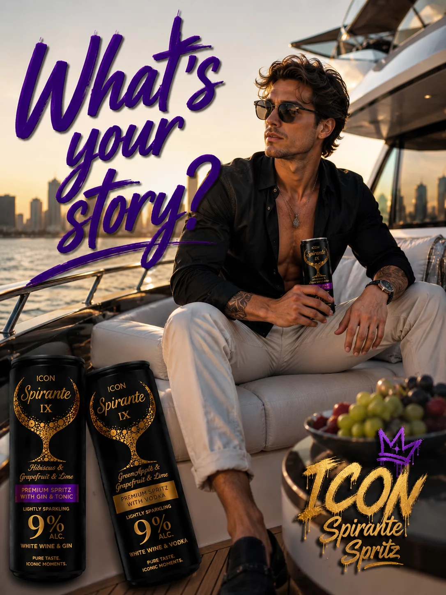

I
Akik nem követni akarják a világot, hanem formálni azt
Akik tudják, hogy az igazi érték nem a hangos pillanatokban, hanem az emlékezetesekben születik.
Az ICON azoknak szól, akik hisznek abban, hogy minden nap lehetőség arra, hogy egy kicsit jobbak legyünk, mint tegnap voltunk. A stílus nem külsőség, hanem hozzáállás.